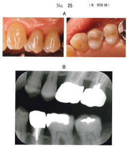
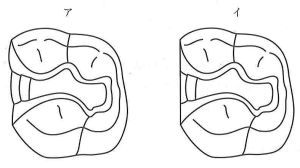
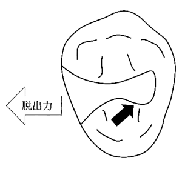

メタルインレー修復では、修復物の維持と歯質の保護を両立させるため、適切な窩洞形態を付与する必要がある。
GI修復では予防拡大は不要（接着性があるため）。メタルインレーは合着のため予防拡大が必要。
修復物が窩洞から脱落しないよう、窩洞に設定する形態を保持形態という。
| 効力 | 作用 | 関連する形態 |
|---|---|---|
| 安定効力 | 転覆・滑落を防止 | 垂直な底面と平行な窩壁（箱形） |
| 把持効力 | 相対する2壁の摩擦で脱出を防止 | 相対する壁を可及的に平行 |
| 拘止効力 | 開放側への脱出を防止（引っかかり） | 内開き形態、鳩尾形、溝、穿下など |
| 嵌合効力 | 合着材の物理的因子 | セメントによる保持 |
| 接着効力 | 合着材の化学的因子 | 接着性セメントによる保持 |
| 形態 | 特徴 | 効力 |
|---|---|---|
| 箱形 | 垂直な底面と平行な窩壁 | 安定効力、把持効力 |
| 外開き形 | 側壁にテーパー（1/10〜4/10）を付与 | 安定効力、把持効力 |
| 内開き形 | 開放角より内側が大きい | 安定効力、把持効力、拘止効力 |
※メタルインレーの基本的保持形態は箱形と外開き形
| 形態 | 効果 |
|---|---|
| 階段 | 垂直脱出力への拘止 |
| 鳩尾形 | 側方脱出力への拘止（アマルガム修復用） |
| 溝 | 側方脱出力への拘止 |
| 穿下（添窩） | 側方・垂直脱出力への拘止 |
| 小窩 | 側方脱出力への拘止 |
| ピン | 側方・垂直脱出力への拘止 |
窩洞形成や修復操作を容易にするために付与する形態。
エナメル質窩縁の1/3幅に窩縁斜面（ベベル）を付与する。窩縁隅角は135°を基本とする。
※GI修復ではバットジョイント（窩縁斜面なし）
2級窩洞はメタルインレー修復の最適応である。隣接面の削除方法により2つのタイプに分類される。
| タイプ | 特徴 | 利点 |
|---|---|---|
| スライスタイプ | 隣接面を斜めにスライス | 審美性に優れる 健全歯質の保存 短い歯間距離への対応 |
| ボックスタイプ | 隣接面に箱型窩洞を形成 | 歯質削除量が少ない 金属露出が少ない 修復物の適合性 |
2級メタルインレー修復の窩洞形成で正しいのはどれか。3つ選べ。
【解説】メタルインレーでは予防拡大が必要、咬頭隆線は保存、凸隅角は曲面化（便宜形態）。バットジョイントはGI修復の窩縁形態。遊離エナメル質は非接着性修復では除去する。
47歳の女性。上顎左側小臼歯部の口腔清掃時の違和感を主訴として来院した。検査の結果、└4にメタルインレー修復を行うこととした。患者は金属修復に同意しているが、目立たないようにと希望している。初診時の口腔内写真（別冊No.25A）とエックス線画像（別冊No.25B）を別に示す。窩洞形成で正しいのはどれか。1つ選べ。

【解説】凸隅角部を曲面にするのは便宜形態として正しい。鳩尾形はアマルガム修復の補助的保持形態。スライス式は審美的だが、隣接面窩洞でない場合は適応外。
2級メタルインレーの基本的保持形態はどれか。2つ選べ。
【解説】基本的保持形態は箱形と外開き形態。階段・小窩は補助的保持形態。鳩尾形はアマルガム修復の補助的保持形態であり、メタルインレーでは用いない。
メタルインレーの2級窩洞の模式図を示す。アの窩洞形態がイと比較して優れているのはどれか。2つ選べ。

【解説】ア（スライスタイプ）はイ（ボックスタイプ）と比較して、審美性と健全歯質の保存に優れる。辺縁封鎖性・適合性はボックスタイプが優れる。
窩洞形態による修復物保持の模式図を示す。黒い矢印が示す形態の脱出力に対する効果で正しいのはどれか。1つ選べ。

【解説】図は内開き形態（アンダーカット様の引っかかり）を示しており、開放側への脱出を防止する拘止効力を発揮する。安定効力は転覆防止、把持効力は摩擦による脱出防止。